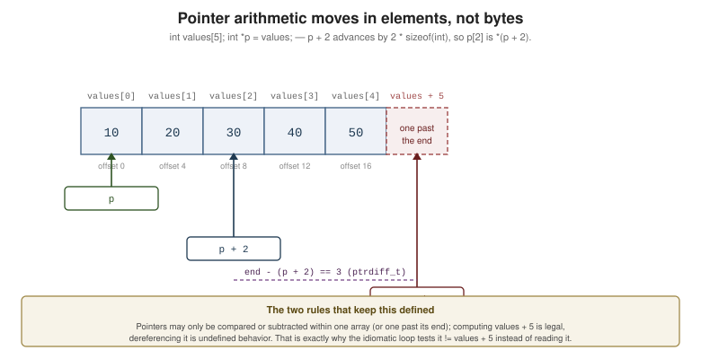

Pointers
|
This content was generated with the assistance of AI and should be verified against the official documentation before being relied on in production. |
A pointer is a value that designates an object (or a function). That is all — but pointers are how C does output parameters, arrays, strings, dynamic memory, data structures and polymorphism, so nearly every other page in this section leans on this one.
Address-of and Dereference
#include <stdio.h>
int main(void)
{
int value = 42;
int *p = &value; // & takes the address; p points to value
printf("value = %d, *p = %d\n", value, *p); // * reads through the pointer
*p = 99; // writing through the pointer writes the object
printf("value = %d\n", value); // 99
printf("sizeof p = %zu, p = %p\n", sizeof p, (void *)p); // %p needs a void *
return 0;
}int *p declares “*p` is an int” — read declarations from the name outwards. That is also why the asterisk
belongs with the name: `int *a, b; declares a pointer a and a plain int b.
Pointer Arithmetic
Arithmetic on a pointer moves it in units of the pointed-to type, not bytes:

#include <stddef.h>
#include <stdio.h>
int main(void)
{
int values[5] = { 10, 20, 30, 40, 50 };
int *p = values; // decays to &values[0]
printf("%d %d %d\n", *p, *(p + 2), p[2]); // 10 30 30 -- p[i] IS *(p + i)
++p; // advances by sizeof(int), not by 1 byte
printf("%d\n", *p); // 20
int *last = values + 4;
ptrdiff_t distance = last - p; // difference of pointers: a signed count of elements
printf("distance = %td\n", distance); // 3
// Walking with a one-past-the-end sentinel -- the idiomatic C loop:
for (int *it = values; it != values + 5; ++it) {
printf("%d ", *it);
}
putchar('\n');
return 0;
}The rules that make this safe:
-
Only pointers into the same array (or one past its end) may be subtracted or compared. Anything else is undefined, even if it "works".
-
A pointer one past the end is valid to compute and compare, but not to dereference. That is what makes
it != values + 5legal. -
ptrdiff_tis the type of a pointer difference (%td), andsize_tthe type of a size (%zu). -
There is no arithmetic on
void *in standard C (GCC allows it as an extension, treating it aschar *).
Validity and Dangling Pointers
A pointer is valid only while the object it points to is alive. The three ways to get this wrong:
The broken one first — and note that this is one of the few lifetime bugs the compiler catches for you:
static int *broken_local(void)
{
int local = 42;
return &local; // DANGLING: local dies when the function returns
}warning: address of stack memory associated with local variable 'local'
returned [-Wreturn-stack-address]The two ways to return a pointer that stays valid:
#include <stdio.h>
#include <stdlib.h>
static int *correct_static(void)
{
static int persistent = 42; // static storage duration: lives for the whole program
return &persistent;
}
static int *correct_heap(void)
{
int *p = malloc(sizeof *p); // allocated storage: lives until free()
if (p != nullptr) {
*p = 42;
}
return p; // the caller must free it
}
int main(void)
{
int *s = correct_static();
int *h = correct_heap();
if (h == nullptr) {
return EXIT_FAILURE;
}
printf("%d %d\n", *s, *h);
free(h);
h = nullptr; // defensive: a freed pointer must not be reused
return 0;
}After free, the pointer’s value is indeterminate — even comparing it is undefined, which is why setting it
to nullptr immediately is worth the keystroke. -fsanitize=address catches use-after-free and
use-after-return at run time; nothing catches them at compile time.
Null Pointers
#include <stddef.h>
#include <stdio.h>
static size_t safe_length(const char *s)
{
if (s == nullptr) { // check before every dereference of a maybe-null pointer
return 0;
}
size_t n = 0;
while (s[n] != '\0') {
++n;
}
return n;
}
int main(void)
{
int *p = nullptr; // C23: a real null pointer constant of type nullptr_t
int *q = NULL; // <stddef.h> macro -- still fine, still ubiquitous
int *r = 0; // also a null pointer constant, but say what you mean
printf("%d %d %d %zu %zu\n",
p == nullptr, q == NULL, r == nullptr,
safe_length(nullptr), safe_length("abc"));
return 0;
}nullptr (C23) is an improvement on NULL for one concrete reason: NULL may expand to 0, so passing it as
a variadic argument (execl(path, "sh", NULL)) can pass an int where a pointer is expected. nullptr has
pointer type always. Dereferencing a null pointer is undefined behavior — not a catchable error.
Pointers to Structures
#include <stdio.h>
struct Point { double x, y; };
// A const pointer parameter: read-only access, no copy of the struct.
static double norm_squared(const struct Point *p)
{
return p->x * p->x + p->y * p->y; // p->x is (*p).x
}
// A non-const pointer: an output parameter.
static void scale(struct Point *p, double factor)
{
p->x *= factor;
p->y *= factor;
}
int main(void)
{
struct Point p = { .x = 3.0, .y = 4.0 };
printf("%g\n", norm_squared(&p)); // 25
scale(&p, 2.0);
printf("%g,%g\n", p.x, p.y); // 6,8
return 0;
}Passing a pointer to a struct is the default in C APIs: it avoids copying, and it is the only way to let a
function modify the caller’s object. Mark it const whenever the function only reads.
Pointers and Arrays Are the Same Access
An array is not a pointer — it has a size and cannot be reassigned — but indexing an array and indexing a pointer compile to the same thing:
#include <stdio.h>
int main(void)
{
int values[3] = { 1, 2, 3 };
int *p = values;
printf("%d %d %d %d\n", values[1], *(values + 1), p[1], *(p + 1)); // all 2
// But the types differ where it matters:
printf("%zu %zu\n", sizeof values, sizeof p); // 12 8 -- an array knows its size
return 0;
}See Arrays and Strings for decay, [static n]
parameters and multidimensional indexing.
void * — The Generic Pointer
void * can hold any object pointer, converts to and from other object pointer types without a cast, and
cannot be dereferenced or arithmetic’d. It is how malloc, memcpy and qsort stay type-agnostic:
#include <stdio.h>
#include <stdlib.h>
#include <string.h>
int main(void)
{
int *numbers = malloc(3 * sizeof *numbers); // void * -> int *, no cast needed
if (numbers == nullptr) {
return EXIT_FAILURE;
}
numbers[0] = 1; numbers[1] = 2; numbers[2] = 3;
int copy[3];
memcpy(copy, numbers, 3 * sizeof *numbers); // int * -> void *, implicitly
void *opaque = numbers;
int *back = opaque; // and back again, still no cast
printf("%d %d %d\n", copy[2], back[0], *(int *)opaque);
free(numbers);
return 0;
}sizeof *numbers rather than sizeof(int) is the habit worth adopting: change the type of numbers and the
allocation follows automatically.
const and Pointers
There are two things a pointer declaration can protect — the pointee, or the pointer — and the position of
const decides which:
#include <stdio.h>
int main(void)
{
int a = 1, b = 2;
const int *pointee_const = &a; // cannot write *p; may re-point
// *pointee_const = 5; // error
pointee_const = &b; // fine
int *const pointer_const = &a; // may write *p; cannot re-point
*pointer_const = 5; // fine
// pointer_const = &b; // error
const int *const both = &a; // neither
// *both = 7; both = &b; // both errors
printf("%d %d %d %d\n", a, b, *pointee_const, *both);
return 0;
}Read it right-to-left: const int * is "pointer to const int", int * const is "const pointer to int".
const char * is the correct type for a string you will not modify, and const on a parameter is a contract
the compiler enforces at every call site.
restrict
restrict on a pointer parameter promises that, for the lifetime of the pointer, the object it points to is
not accessed through any other pointer. It exists so the optimizer can keep values in registers instead of
re-loading them after every store:
#include <stddef.h>
// The promise: dst and src do not overlap. This is exactly memcpy's contract.
void copy_scaled(size_t n, double *restrict dst, const double *restrict src, double factor)
{
for (size_t i = 0; i < n; ++i) {
dst[i] = src[i] * factor; // no need to re-read src after writing dst
}
}
// Without restrict the compiler must assume dst and src may alias, and reload each time.
void copy_scaled_maybe_aliasing(size_t n, double *dst, const double *src, double factor)
{
for (size_t i = 0; i < n; ++i) {
dst[i] = src[i] * factor;
}
}restrict is a promise you make, unchecked. Break it — pass overlapping regions — and the behavior is
undefined, which is precisely why memcpy (whose parameters are restrict) requires non-overlapping regions
and memmove exists for when they do overlap. See
Performance.
Function Pointers and Callbacks
A function name decays to a pointer to that function, and a function pointer can be called directly. This is C’s mechanism for polymorphism, dispatch tables and callbacks:
#include <stdio.h>
static int add(int a, int b) { return a + b; }
static int subtract(int a, int b) { return a - b; }
static int multiply(int a, int b) { return a * b; }
typedef int (*BinaryOp)(int, int); // the readable spelling -- always typedef these
static int apply(BinaryOp op, int a, int b)
{
return op(a, b); // or (*op)(a, b) -- identical
}
int main(void)
{
BinaryOp op = add; // no & needed: a function name decays
printf("%d\n", op(2, 3)); // 5
// A dispatch table: the C replacement for a long switch or a class hierarchy.
struct Entry { const char *name; BinaryOp fn; };
static const struct Entry table[] = {
{ "add", add },
{ "subtract", subtract },
{ "multiply", multiply },
};
for (size_t i = 0; i < sizeof table / sizeof table[0]; ++i) {
printf("%s(6,7) = %d\n", table[i].name, apply(table[i].fn, 6, 7));
}
return 0;
}The declaration syntax is genuinely hard to read, so typedef it: int (*fn)(int, int) is a pointer to a
function; int *fn(int, int) is a function returning a pointer.
qsort — The Canonical Callback
#include <stdio.h>
#include <stdlib.h>
#include <string.h>
// The comparison contract: negative if a < b, zero if equal, positive if a > b.
static int compare_ints(const void *a, const void *b)
{
int lhs = *(const int *)a; // cast the void * back to the real type
int rhs = *(const int *)b;
return (lhs > rhs) - (lhs < rhs); // no subtraction: avoids overflow on extremes
}
static int compare_strings(const void *a, const void *b)
{
// The elements are char *, so a is a pointer TO a char * -- one level more.
const char *const *lhs = a;
const char *const *rhs = b;
return strcmp(*lhs, *rhs);
}
int main(void)
{
int numbers[] = { 42, -7, 0, 99, 13 };
size_t n = sizeof numbers / sizeof numbers[0];
qsort(numbers, n, sizeof numbers[0], compare_ints);
for (size_t i = 0; i < n; ++i) {
printf("%d ", numbers[i]);
}
putchar('\n');
const char *words[] = { "pear", "apple", "fig" };
size_t m = sizeof words / sizeof words[0];
qsort(words, m, sizeof words[0], compare_strings);
for (size_t i = 0; i < m; ++i) {
printf("%s ", words[i]);
}
putchar('\n');
int key = 13;
const int *found = bsearch(&key, numbers, n, sizeof numbers[0], compare_ints);
printf("found %d\n", found != nullptr ? *found : -1);
return 0;
}Two mistakes to avoid: writing return lhs - rhs; in a comparator (it overflows for large-magnitude values,
and -Wall will not tell you), and forgetting that with an array of pointers the callback receives a pointer
to the pointer.
Because C has no closures, a callback that needs context takes a void *user_data parameter — the pattern
every C library uses (pthread_create, thrd_create, event loops). Note that qsort itself has no such
parameter, which is what qsort_r (POSIX/glibc) exists for.
See Also
-
Arrays and Strings — decay, indexing and string pointers.
-
Dynamic Memory Allocation — where most pointers come from.
-
Memory Model and Alignment — strict aliasing and what a pointer conversion may legally do.
-
Storage Duration, Scope and Linkage — the lifetimes that make a pointer valid or dangling.
-
C++: Memory Management and Smart Pointers — C++ keeps raw pointers for non-owning access and moves ownership into
unique_ptr/shared_ptr.
References
-
WG14 N3220 — the C23 working draft (§6.5.4.3 "Address and indirection operators", §6.5.7 "Additive operators", §6.3.2.3 "Pointers", §6.7.4.2 "The
restricttype qualifier"). -
cppreference.com — Arithmetic operators (pointer arithmetic).